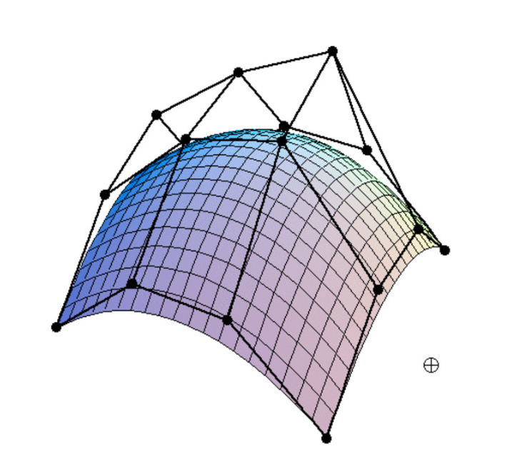

|
Tianzhe Chu
Yinghao Zhang
|
|
|
Introduction In this project, we implement a mesh editor that incoporate several methods related to Bezier curves, surfaces, and mesh editing. These methods allow us to edit, split and transpose target triangles and create better 3D objects. More precisely, we first implement the de Casteljau subdivision algorithm to evaluate a Bezier curve. Then, we extend it to Bezier surfaces. Then, we implement the flipping and splitting methods for edges of triangles. Finally, we combine these methods and implement loop subdivision upsample the mesh to a high-resolution. |
|||||||||||||||||||||
|
|
Interpretation De Casteljau subdivision is a recursive algorithm that can be used to evaluate a Bezier curve. It can be precisely described as follows: 1. Given a set of control points, we can evaluate the Bezier curve at a parameter value t by linearly interpolating between the control points. 2. We can repeat this process until only one point is left, which is the point on the curve at parameter t. The detailed implementation is below: \(newPoints.push\_back(lerp(points[i], points[i+1], t))\)
|
|||||||||||||||||||||
|

|
Interpretation The de Casteljau algorithm can be extended to Bezier surfaces by multiple parameters for different dimensions, i.e. u and v. The algorithm can be described as follows: 1. For each row of control points, we evaluate the Bezier curve using 1D de Casteljau altorithm with parameter u. 2. For the newly generated control points, which can be regarded as columns, we apply 1D de Casteljau algorithm again with parameter v. In implementation, theevaluateStep function is the same as the one in Task 1. Then,
evaluate1D function should recursively apply evaluateStep function to generate the control points for each row.
Finally, evaluate function will work as a main function for this Task, doing 1D de Casteljau for each row and then for each column with parameters u, v.
|
|||||||||||||||||||||
|
Implementation To implement area-weighted vertex normals, we iterate through all the non-boundary faces neighboring the given vertex, calculate the area, sum them up and then do the normalization. More presicely, we use the following steps: 1. Each halfedge and its twin belongs to a face respectively. We do normalization for each face in step 2. 2. In each face, we iterate through all the halfedges and store the vertices. Then, we calculate the area via cross product, do summation and normalization. 3. Finally, we add back the normalized area for the given vertex and return the unit result.
|
||||||||||||||||||||||

|
Implementation The process of edge flip can be interpreted as two sub-processes: recording all the elements we need as iterators, and building the whole structure using them. Note that we do not need to delete or create any new element, the building Task can be implemented as just re-assignmenting the pointers in the elements.
We use two function build_triangle receives three halfedge iterators and a face iterator. It connects the three halfedges through
next() and modifies the face() poniter of the three halfedges to the face and halfedge()
pointer of the face to one of the halfedges. build_edge receives two halfedges iterators and an edge iterator. It points twin() to
each other and points edge() to the edge and points halfedge() to one of them.
In edge flip process, we first record all the elements (edges, halfedges, faces, vertices) as iterators. Then
we call the two functions above multiple times to configure all the
halfedge() of a vertex was omitted at the first place. This caused an error
in Task 6 when refering to the halfedge of a vertex where the halfedge has been flipped.
|
|||||||||||||||||||||

|
We still use our two functions: build_triangle receives three halfedge iterators and a face iterator. It connects the three halfedges through
next() and modifies the face() poniter of the three halfedges to the face and halfedge()
pointer of the face to one of the halfedges. build_edge receives two halfedges iterators and an edge iterator. It points twin() to
each other and points edge() to the edge and points halfedge() to one of them. Now since we need to add more elements in edge split, we create the needed number of them after the recording step, and save them as iterators as well. Specifically, 1 vertex, 6 halfedges, 3 edges, and 3 faces are created. So now the process should be: 1. recording all the exsiting elements, 2. creating new elements, including calculating the position of the new vertex, 3. building the structrue. In step 3, we call the two functions several times to build the four triangles and four edges in the middle, during which we need to set the parameters of the two functions to both old elements or new elements. After that, similarly, the remaining vertex stuff are coded by hand. Results The following two images show the effect of edge splitting.
Note that the order of parameters to pass to our We implemented support for boundary edges. The results are as follows:
|
|||||||||||||||||||||

|
Implementation To achieve loop subdivision, we employ the edge flip and edge split introduced in Task 4 and 5. These operations enable us to divide each triangle into four smaller triangles, which is known as a 4-1 subdivision. We can obtain a more refined and upsampled mesh. The implementation of this feature involves the following steps:
splitEdge() function.
Once an edge is splitted, we copy the Edge::newPosition to both of the originally existing edges.
Although the original edges are technically split into two "new" edges,
we must not flip them.
After labeling the edges, we flip the new blue edges accordingly.
Finally, we need to ensure that we toggle the isNew flag off at some point,
so that we have no new edges when we try to upsample for one more time.
Vertex::newPosition.
As for the new ones, we iterate through its edges and find an old edge which saves its new position.
The following four images show different level of subdivision (from no subdivision to 3 times). Note the Task pointed by the red arrow, where the sharp edge becomes more and more smooth. This is due to the normalization of the new vertices' positions using their neighboring vertices. As a result, the new vertices along the edges are an average of the neighboring vertices on the two adjacent faces, which gives the edges a rounded appearance.
After several subdivisions, the edge of the cube disappear, which is not what we want some times. To solve this, we propose a mothod of pre-splitting. The image below shows the pre-splitting process and its effects. One can see that with pre-splitting, the edge is preserved.
In addition, we have noticed that the upsampled mesh of The following images show the non-symmetic mesh and the reasons for this.
To fix this problem, we can ensure that all vertices have an equal number of degrees from the beginning. To achieve this, we need to split the edges on each face of the cube, which will result in each original vertex having a degree of 6. This will ensure the symmetry of the upsampled mesh. The following images show the method to fix this and the its effects. We can see that the mesh is now symmetric.
We implemented support for boundary edges. Calculation of new position of boundary vertices is different from those of inner ones. We use the weights from slides from CMU 15462, which are, for new vertices, \(v=(1/2)*(A+B)\) where \(A\) and \(B\) are two vertices of this old edge, and for old vertices, \(v=(1/8)*(A+B)+(3/4)*v\), where \(A\) and \(B\) are the two neighbors of \(v\) on this boundary. We only need to change step 1 to support boundary edges. After this, the results are shown below. One can see that the boundaries, such as the car lights, become more and more smooth. Also comparing with and without boundary edge support after two times of subdivision, we show that our improvement enhances the appearance.
|